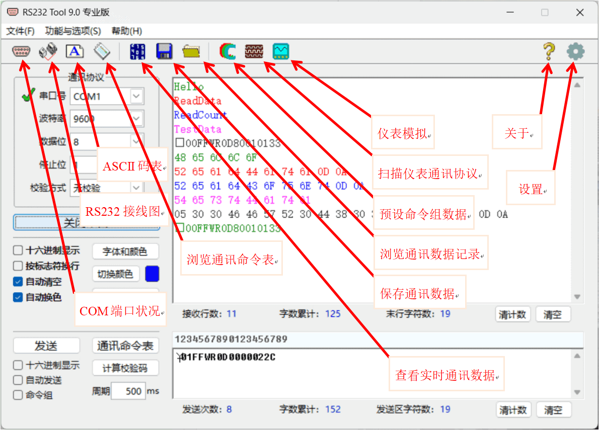

软件界面
运行进入 RS232 Tool，软件主界面如下图所示。

软件界面接收区功能
【打开串口/关闭串口】——打开或关闭指定串口的通讯功能，接收或发送数据前均应先打开。
【字体和颜色】——选择、设置接收区的字体字号和颜色，在其弹窗中进行设定，显示颜色最多可选择5种。
【切换颜色】——改变接收区当前字体颜色到下一个，右边小方块是当前所选颜色，新接收字串将以此颜色显示。
【结尾标志符】——选择接收数据的结束标志字符或做编辑，可在其弹窗中对结尾标志符进行选择、修改、增加或删除。一般在智能仪表的通讯命令格式中，均用一个固定的标志字符串，如“回车符＋换行符”等作为其一次通讯的结束标志，这个标志字符串称为“结尾标志符”。RS232 Tool 可用此标志符作为接收数据的自动换行标记。
“□十六进制显示”——勾选时接收区中字串以十六进制显示，取消时以ASCII码显示。十六进制显示时，每一个字符是用2个十六进制数表示，用1个空格分隔。例如：ASCII码字符“abcd”，十六进制显示时是“61 62 63 64 ”。
“
□按标志符换行”——勾选时接收区数据将按选定的结尾标志符进行换行，否则自动换行。“□自动清空”——勾选时接收区显示内容满时将会被自动清空。
“□自动换色”——勾选时接收区数据换行时将自动切换字体颜色，每行用不同颜色显示。
软件界面发送区功能
【发送】——从指定串口发送一次发送区内容或所选命令组数据。
【通讯命令表】——从命令表中选择所需的通讯命令或做编辑，可在其弹窗中选择、发送、修改或删除等用户之前保存的各条通讯命令记录，以及插入、增加新的通讯命令。
【计算校验码】——计算需要发送的字符串中的校验码，在其弹窗中操作。
“□十六进制显示”——勾选时发送区中字串以十六进制显示，取消时以ASCII码显示。十六进制显示时，每一个字符是用2个十六进制数表示，用1个空格分隔。例如：ASCII码字符“abcd”，十六进制显示时是“61 62 63 64 ”。
“
□自动发送”——勾选时自动按指定周期间隔时间持续发送命令组或发送区内容，不需再去点击发送按钮。“□ 命令组”——勾选时依次按周期间隔发送一组预设的各条通讯命令，不勾选时为发送单条命令模式，需点击发送按钮去执行发送。
发送区框上方的“数字标尺”，便于准确定位发送区中通讯命令字符串各字符的位置。
串口通讯测试的一般步骤
1. 将智能仪表或 PLC 的通讯口与电脑串口（RS232/RS485/RS422）用通讯电缆相连接；
2. 选择对应串口，如“COM1”；
3. 设定串口的通讯协议，包括波特率、数据位、停止位及校验方式，通讯双方要完全一致；
4. 设置通讯命令，输入或通过通讯命令表选择所需通讯命令；
5. 点击【打开串口】，接收或发送数据前均应先打开 ；
6. 点击【发送】，从串口发送出去一次发送区中的通讯命令字符串数据。